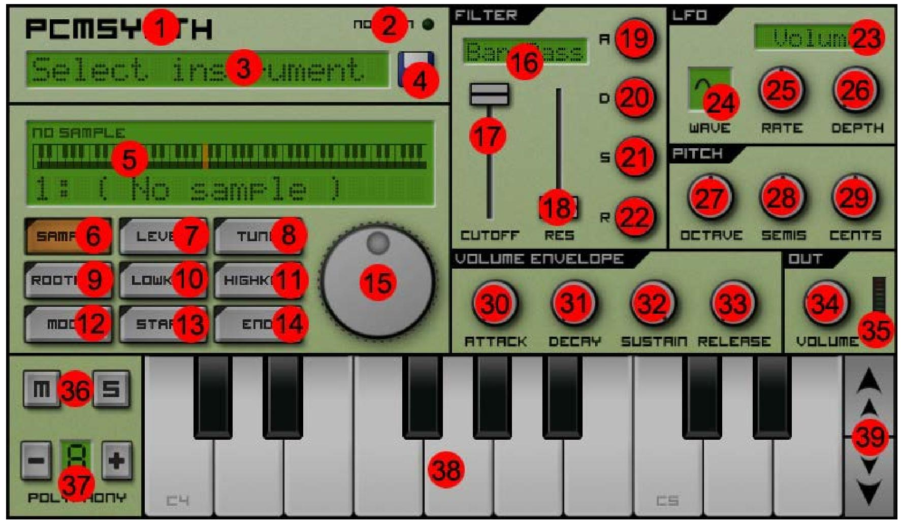

Caustic 深度盘点：一台手机能装下的完整电子音乐工作室
从 12 种合成器到母带处理，从 Pattern 自动化到 Song 级动态——Caustic 把一整条录音棚信号链塞进了移动端，这篇盘点帮你看清它能做什么、擅长什么、又有哪些绕不开的短板。
它是什么，为什么值得盘点
很多人第一次接触 Caustic，是在手机上搜到caustic官网上推荐的合成器 APP，点开发现界面像一台真的机架——左边是 12 种可以随时插拔的合成器和鼓机，中间是带推子和 EQ 的混音台，右边是能画 pattern 的序列器，最末端还有一台专门做母带的主控段。整个信号链从振荡器发声，经过效果机架、混音、再到 Limiter 防爆音，一步不少。手机上就能跑，去下载页面拿安装包。
这不是玩具。一套完整的电子音乐制作工作流——从写 pattern、叠音色、做自动化、混响度到最终导出 WAV——可以在一台手机里从头走一遍。对于不想开机、不想装 DAW、只想随手摸出一段旋律的人来说，它是目前移动端最接近"正经工作室"的解决方案。
这篇盘点不讲界面操作，而是系统性地把它的能力面铺开：有哪些武器、每种武器擅长什么、组合起来能打哪些仗，最后也客观说清楚它的天花板在哪。
能力域一：12 种合成器——从减法到物理建模全覆盖
Caustic 最核心的资产就是 12 种可选机器，每种机器背后对应一个完整的合成流派。把这些流派摸清楚，等于手里攥了一套能应对绝大多数电子音乐风格的音色库。
虚拟模拟减法合成 Subsynth——这台是主力。双振荡器加振荡器混合比、独立的滤波器和包络，标准到不能再标准的减法合成架构。主旋律、Pad、低频贝斯都靠它出活。振荡器可以选锯齿、方波、正弦，滤波器有低通、带通、高通三种，Cutoff 和 Resonance 各一个旋钮——足够做出从柔和到尖锐的各种合成音色。LFO 能调制 Cutoff 或 Pitch，做颤音或扫频都不在话下。
多采样波合成 PCMSynth——如果你不想自己捏音色，想直接上钢琴、弦乐、或者导入任意 WAV 音色，这台解决。它本质是一个采样播放器，支持多波表导入，自带 ADSR 包络和滤波器。对于想在电子作品里加一点真实乐器质感的人来说，PCMSynth 是刚需。
303 单音合成 BassLine——专门模拟 Roland TB-303 的 Acid Bass 音色。单振荡器加一个标志性的晶体管滤波器，Cutoff 扫起来就是那种经典的 Acid 律动。只能单音，但 pattern 里自带 slide（滑音）和 accent（重音），写起 Bass 线来手感很对。
泛音表 Pad 合成 PadSynth——用泛音表算法生成厚密的铺底音色。和 Subsynth 用振荡器拼出来的 Pad 不同，PadSynth 的音色是多个泛音叠加合成的，自带一种温暖的扩散感，适合做环境音或长音铺底。
DX 风格 FM 合成 FMSynth——四算子 FM 合成，模拟 Yamaha DX7 那一套。电钢琴、金属感音色、bell tone 都是 FM 的拿手好戏。相比减法合成，FM 的音色更"数字"，更有金属感，对于做一些复古或前卫音色的人来说是必需品。
弦建模合成 KSSynth——这是 Caustic 里比较特别的一台。Karplus-Strong 物理建模算法，模拟琴弦被拨动后的振动衰减。调几个参数就能从拨弦吉他切到电贝斯 Slap、再到钢琴延音、甚至弓弦乐。音色非常自然有实体感，缺点是吃 CPU 所以复音数有限（通常 4~8 比较稳）。
超锯齿复音合成 SawSynth——用多个超锯齿振荡器做群声合成，一次性出厚密的合成音墙。适合做主奏 Lead 或群声 Pad，不需要像 Subsynth 那样一台一台叠振荡器。
另外还有 8bit 方程合成（复古芯片音乐）、可配置模块化合成（自定义信号流）、音轮风琴（Hammond 风格）、8 段谐波声码器（机械感人声）、8 通道采样鼓机 BeatBox——12 台机器加起来，从复古到前卫、从合成到真实、从单音到复音，基本覆盖了电子制作能用到的所有音色来源。
能力域二：完整的信号链——从发声到母带一站式
合成器发声只是起点，Caustic 把从信号产生到最终导出的整条链都做全了。
效果机架——支持 20 种内置效果类型，每台合成器可以单独挂效果。常用的包括 Delay、Reverb（多种房间尺寸可选）、Chorus、Flanger、Phaser、Compressor、Saturation、Overdrive——够用了。效果参数比较详细，Reverb 有混响时间、预延迟、干湿比，Delay 有时间、反馈、干湿比，Compressor 有阈值、比值、攻击释放。
混音台——每台动态机器在混音台占一个轨道，自带三段固定 EQ（Low/Mid/High 各一个旋钮）、音量推子、Pan 声像、Reverb Send 和 Delay Send 发送量。全局还有一套 Reverb 和 Delay，可以把多台机器的信号按不同比例送进去共用。这是一个非常实用的设计——不需要每台机器各开一套混响，统一发送能让整个混音更有凝聚力。
主控段——这是整条链的最后一站，专门做母带处理。提供 Low Shelf / Peak / High Shelf 组合 EQ（比混音台的三段 EQ 精细得多），以及一个 Limiter。Limiter 是防爆音的最后防线——混音台每台机器电平表可能都不爆，但叠加后的总信号很容易超过 0dBFS，Limiter 把超过阈值的信号硬削平，确保导出的文件不会有爆音。参数推荐 Threshold 设 -2~-4dBFS、Ceiling 0dBFS，释放时间中等。
整条信号链的顺序是：动态机器发声 → 效果机架处理 → 混音台混音量和发送全局混响 → 主控段母带 → 最终输出。这个顺序是固定的，不能乱——Caustic 帮你把专业 DAW 里的信号路由逻辑做成了默认。

能力域三：Pattern + Song 双层测序——写结构不只是写单小节
很多移动端合成器只能写单小节 pattern 然后循环，Caustic 有两层测序：Pattern 层写单小节内的音符和 automation，Song 层把多个 pattern 串起来组成完整的歌曲结构。
Pattern 层支持多通道并行写，每台机器对应一个通道，点格子就能写音符。BassLine 还能写滑音和重音，BeatBox 有 8 个独立通道的打击乐 pattern。每个 pattern 的长度灵活，不一定非得是 4/4 拍。
Song 层把 pattern 拼成完整的 Intro → Build → Drop → Breakdown → Drop → Outro 结构。这才是真正做"歌"的起点——不是一段 8 小节 loop 循环到底，而是有起承转合的完整作品。
能力域四：自动化录制——旋钮动作随时间回放
自动化是把"死"的 pattern 变成"活"的音乐的关键。Caustic 支持两种自动化：
Pattern 自动化绑定单个 pattern，每次该 pattern 被触发时都会回放——比如 BassLine 的 Cutoff 扫频，每次循环都扫一遍。Song 自动化绑定整首歌的时间轴，跨越 pattern——比如 Pad 从 Intro 到 Build 阶段的渐入，或者 Drop 段落的音量拉高。如果两个自动化同时存在，Pattern 优先。
录制过程非常直观：切到正确的模式（Pattern 或 Song），按 Record 进入录制状态，然后边播放边用手指转动任何支持自动化的旋钮——Cutoff、Resonance、LFO Rate、混音台音量推子、效果器 Wet/Dry……几乎所有核心参数都能录。停止录制后控件会变成黄色或橙色边框表示已绑定自动化，回放时旋钮会自动跟随移动。
最常用的自动化场景包括：Drop 段落的 Cutoff 扫频（Subsynth Lead 从 20% 扫到 80%）、Pad 渐入、Delay 爆发（过渡段落 Delay Feedback 从 20% 提到 80% 再切回）、底鼓音量脉冲——这些都是电子音乐里标志性的动态变化，以前在 DAW 里画节点才能做，现在边放边拧就能录。更多自动化玩法和参数细节可以去caustic文档查阅。
短板也要说
Caustic 不是完美的。几个硬限制需要提前知道：
复音数上限——KSSynth 物理建模每多开一个音符就要多算一整条衰减链，复音数通常只能设 4~8。Subsynth 好一些但也有上限。如果同时开太多台合成器、每台都用高复音，手机 CPU 可能扛不住出现掉音。
没有音频录制——它是纯合成器，不支持录外部音源（人声、吉他输入）。想做人声需要先在别处录好，作为 PCMSynth 的样本导入。
导出格式有限——主要支持 WAV 和 OGG，不支持分轨导出。如果后期需要在 DAW 里继续混音，只能导出立体声文件再导入，灵活性打了折扣。
移动端触控体验有局限——在手机屏幕上精细调整小旋钮确实不方便，尤其是同时开着效果机架和混音台的时候。平板体验好很多，但终究不如鼠标精准。
什么样的人该用它
想入门电子音乐制作的新手——它把合成器、效果、混音、母带、测序都塞进一台 APP，不用花几万买硬件、不用装庞大的 DAW、不用学复杂的信号路由逻辑。在手机上就能走完"写 pattern → 叠音色 → 混音量 → 导出"的完整流程，学习曲线比任何桌面 DAW 都平缓。
随时想做点东西的碎片创作者——灵感来了掏手机就能摸，通勤路上写个 8 小节 loop，午休叠两个 Pad，晚上回家导出。这种"随手记音乐"的场景，Caustic 是目前移动端最好的选择。
需要便携第二工作台的制作人——已经在用 Ableton Live 或 FL Studio 的人，可以把 Caustic 当成 sketchpad：在手机上快速搭一个 loop 或旋律动机，回家再丢进 DAW 里精修。12 种合成器的音色和自动化录制，足够支撑 sketch 阶段的需求。
但如果你已经是重度 DAW 用户、需要分轨导出、需要音频录制、需要高级母带处理——Caustic 很难替代桌面工作站。它的定位始终是"移动端完整工作流"，而不是"移动端 Pro Tools"。
总的来说，Caustic 在有限的体积里塞了一套逻辑完整、覆盖全面的电子音乐制作管线。从 12 种合成流派到完整信号链，从双层测序到自动化，它给的不是一个"手机玩具"，而是一个能真的出作品的便携工作室。对那些想把音乐制作从书桌搬进口袋的人来说，这是目前最值得认真玩透的选择。关于这款软件的完整文档资料，我维护在三个代码仓库里方便不同网络环境查阅——GitHub 是主仓库，Gitee 做国内同步，GitCode 是额外的镜像备份。